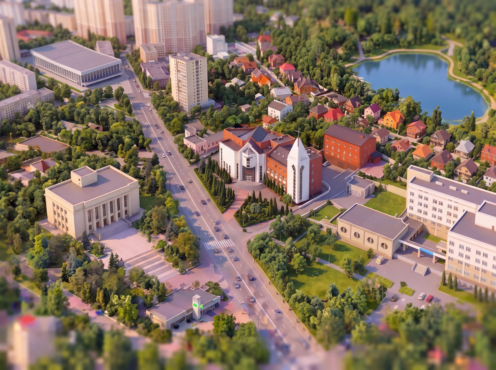
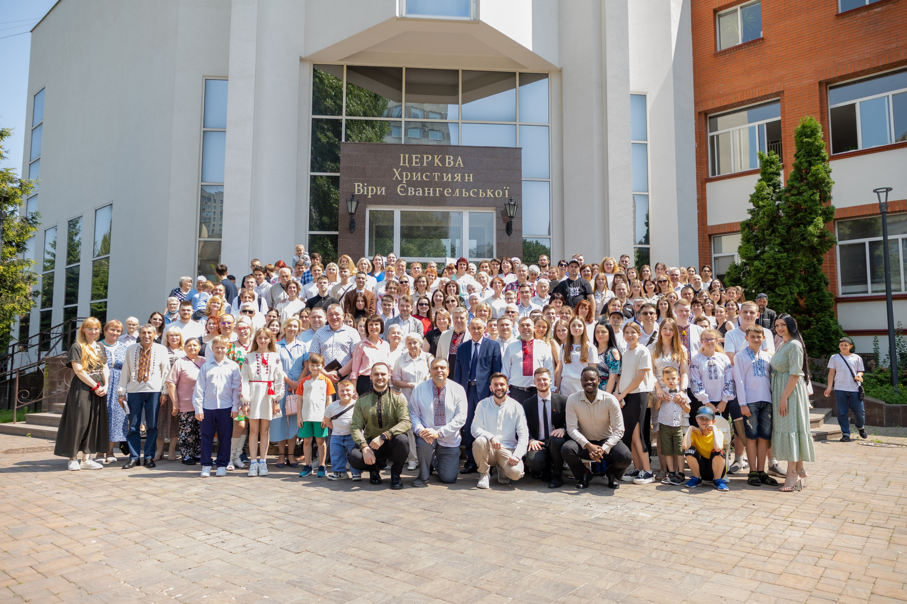
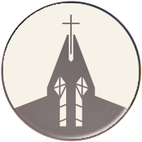

<meta charset="utf-8"><meta name="viewport" content="width=device-width,initial-scale=1,viewport-fit=cover">
<title>Філадельфія — перший екран</title>
<meta name="claude:viewport-fit-sides" content="cover">
<link rel="preconnect" href="https://fonts.googleapis.com">
<link rel="preconnect" href="https://fonts.gstatic.com" crossorigin>
<link rel="stylesheet" href="https://fonts.googleapis.com/css2?family=Manrope:wght@400;500;600;700;800&display=swap">
<style>
:root{
  --ink:#FFFFFF; --ink-soft:rgba(255,255,255,.88);
  --cream:#F4EFE6; --cream-ink:#1F1A17;
  --night:#14110F; --glass:rgba(255,255,255,.14); --glass-line:rgba(255,255,255,.38);
  --sans:"Manrope",ui-sans-serif,system-ui,-apple-system,"Segoe UI",Roboto,Arial,sans-serif;
  color-scheme:dark;
}
html,body{background:var(--night);color:var(--ink)}
body{font-family:var(--sans);-webkit-font-smoothing:antialiased}

/* scroll track: the stage stays pinned while the camera travels */
.track{position:relative;height:420vh}
.stage{position:sticky;top:0;height:100vh;height:100svh;overflow:hidden;perspective:900px;perspective-origin:50% 45%;background:var(--night)}

.map{position:absolute;left:0;top:0;transform-style:preserve-3d;will-change:transform}
.map img{display:block;width:100%;height:100%;max-width:none;user-select:none;-webkit-user-drag:none}
.veil{position:absolute;inset:0;pointer-events:none;background:radial-gradient(60% 55% at 50% 55%,rgba(255,236,206,.0),rgba(255,236,206,.55));opacity:0}

.photo{position:absolute;inset:0;opacity:0;will-change:transform,opacity,filter;transform-origin:50% 60%}
.photo img{width:100%;height:100%;max-width:none;object-fit:cover;object-position:50% 50%;display:block}

/* legibility wash under the hero copy */
.wash{position:absolute;inset:auto 0 0 0;height:62%;pointer-events:none;
  background:linear-gradient(to top,rgba(20,17,15,.62),rgba(20,17,15,.28) 45%,rgba(20,17,15,0))}
.topwash{position:absolute;inset:0 0 auto 0;height:140px;pointer-events:none;
  background:linear-gradient(to bottom,rgba(20,17,15,.35),rgba(20,17,15,0))}

/* header */
.bar{position:absolute;z-index:5;top:0;left:0;right:0;display:flex;align-items:center;justify-content:space-between;
  padding-top:calc(28px + env(safe-area-inset-top,0px));
  padding-left:max(40px,env(safe-area-inset-left,0px));padding-right:max(40px,env(safe-area-inset-right,0px))}
.brand{display:flex;align-items:center;gap:6px;color:var(--ink);text-decoration:none}
.brand img{width:44px;height:44px;border-radius:50%}
.brand span{font-weight:800;font-size:21px;letter-spacing:.02em;text-transform:uppercase}
.menu{font:700 13px/1 var(--sans);letter-spacing:.06em;text-transform:uppercase;color:var(--ink);
  width:113px;height:37px;border-radius:9px;border:1px solid var(--glass-line);background:var(--glass);
  -webkit-backdrop-filter:blur(14px);backdrop-filter:blur(14px);cursor:pointer}
.menu:hover{background:rgba(255,255,255,.22)}

/* hero copy */
.copy{position:absolute;z-index:4;left:0;right:0;bottom:0;
  padding-bottom:calc(40px + env(safe-area-inset-bottom,0px));
  padding-left:max(44px,env(safe-area-inset-left,0px));padding-right:max(44px,env(safe-area-inset-right,0px));
  will-change:opacity,transform}
.copy h1{margin:0 0 30px;font-weight:500;font-size:clamp(52px,8.4vw,128px);line-height:.98;letter-spacing:-.02em;text-transform:uppercase;text-wrap:balance}
.row{display:flex;align-items:center;gap:26px;flex-wrap:wrap}
.cta{display:grid;place-items:center;width:300px;height:72px;border-radius:16px;background:var(--cream);color:var(--cream-ink);
  font:700 12px/1 var(--sans);letter-spacing:.05em;text-transform:uppercase;text-decoration:none;transition:transform .2s ease,background .2s ease}
.cta:hover{transform:translateY(-2px);background:#fff}
.cta:focus-visible,.menu:focus-visible,.brand:focus-visible{outline:2px solid var(--cream);outline-offset:3px}
.row p{margin:0;max-width:300px;font-size:17px;line-height:1.3;color:var(--ink-soft)}
.row p+p{margin-left:24px}

.hint{position:absolute;z-index:4;right:max(44px,env(safe-area-inset-right,0px));bottom:calc(48px + env(safe-area-inset-bottom,0px));
  display:flex;align-items:center;gap:10px;font-size:13px;letter-spacing:.06em;text-transform:uppercase;color:var(--ink-soft)}
.hint i{display:block;width:1px;height:38px;background:linear-gradient(var(--ink),transparent);animation:drip 1.8s ease-in-out infinite}
@keyframes drip{0%{transform:scaleY(.2);transform-origin:top}50%{transform:scaleY(1);transform-origin:top}100%{transform:scaleY(.2);transform-origin:bottom}}

@media (max-width:720px){
  .bar{padding-top:calc(18px + env(safe-area-inset-top,0px));padding-left:max(16px,env(safe-area-inset-left,0px));padding-right:max(16px,env(safe-area-inset-right,0px))}
  .brand img{width:36px;height:36px}.brand span{font-size:17px}
  .menu{width:88px;height:34px;font-size:12px}
  .copy{padding-left:max(16px,env(safe-area-inset-left,0px));padding-right:max(16px,env(safe-area-inset-right,0px));padding-bottom:calc(20px + env(safe-area-inset-bottom,0px))}
  .copy h1{font-size:clamp(40px,12.5vw,72px);margin-bottom:18px}
  .row{gap:12px}
  .row p{font-size:15px;max-width:none;flex:1 1 100%}
  .row p+p{margin-left:0}
  .cta{order:3;width:100%;height:60px}
  .wash{height:72%}
  .hint{display:none}
}
@media (prefers-reduced-motion:reduce){.hint i{animation:none}}
</style>

<main class="track" id="track">
  <section class="stage" id="stage" aria-label="Церква Філадельфія">
    <div class="map" id="map"></div>
    <div class="veil" id="veil"></div>
    <div class="photo" id="photo"></div>
    <div class="topwash"></div>
    <div class="wash" id="wash"></div>

    <header class="bar">
      <a class="brand" href="#" aria-label="Філадельфія — на головну"><span>Філадельфія</span></a>
      <button class="menu" type="button">Menu</button>
    </header>

    <div class="copy" id="copy">
      <h1>Церква<br>Філадельфія</h1>
      <div class="row">
        <a class="cta" href="https://www.google.com/maps/dir/?api=1&destination=%D0%B2%D1%83%D0%BB.+%D0%93%D0%BE%D0%BB%D0%BE%D1%81%D1%96%D1%97%D0%B2%D1%81%D1%8C%D0%BA%D0%B0+57+%D0%9A%D0%B8%D1%97%D0%B2" target="_blank" rel="noopener">Як добратись?</a>
        <p>Приходьте до нас на служіння вже цієї неділі о 10:00 або 12:30</p>
        <p>Ми знаходимось у<br>м. Київ, вул. Голосіївська, 57</p>
      </div>
    </div>
    <div class="hint" id="hint" aria-hidden="true"><i></i>Гортайте</div>
  </section>
</main>

<script>
(()=>{
const IW=4096,IH=3058;
// church entrance on the map image, in fractions
const CX=.502,CY=.50;
const track=document.getElementById("track"),stage=document.getElementById("stage");
const map=document.getElementById("map"),photo=document.getElementById("photo"),veil=document.getElementById("veil");
const copy=document.getElementById("copy"),hint=document.getElementById("hint"),wash=document.getElementById("wash");
const reduce=matchMedia("(prefers-reduced-motion: reduce)").matches;

let vw,vh,mw,mh,ox,oy,cx,cy;
function layout(){
  vw=stage.clientWidth;vh=stage.clientHeight;
  const s=Math.max(vw/IW,vh/IH);mw=IW*s;mh=IH*s;ox=(vw-mw)/2;oy=(vh-mh)/2;
  cx=ox+CX*mw;cy=oy+CY*mh;
  Object.assign(map.style,{width:mw+"px",height:mh+"px",left:ox+"px",top:oy+"px",transformOrigin:`${CX*mw}px ${CY*mh}px`});
}

const clamp=(v,a=0,b=1)=>Math.min(b,Math.max(a,v));
const ease=t=>t<.5?4*t*t*t:1-Math.pow(-2*t+2,3)/2;
const easeOut=t=>1-Math.pow(1-t,3);

function progress(){
  const r=track.getBoundingClientRect();
  return clamp(-r.top/(track.offsetHeight-vh));
}

function render(p){
  // hero copy leaves as soon as the scroll begins
  const c=clamp(p/.1);
  copy.style.opacity=1-c;copy.style.transform=`translateY(${-30*c}px)`;
  copy.style.visibility=c>=1?"hidden":"visible";
  hint.style.opacity=1-clamp(p/.04);
  wash.style.opacity=1-c*.7;

  if(reduce){
    const f=clamp((p-.2)/.4);
    photo.style.opacity=f;map.style.opacity=1-f;return;
  }

  // camera: descends toward the church, swinging along an arc
  const t=ease(clamp(p/.78)),arc=Math.sin(Math.PI*t);
  const scale=1+2.9*Math.pow(t,1.35);
  const rx=52*t;                  // lowering the camera = tilting the ground away
  const rz=-13*arc;               // the swing of the arc
  const tx=(vw/2-cx)*t+arc*vw*.13;
  const ty=(vh*.66-cy)*t-arc*vh*.04;
  map.style.transform=`translate3d(${tx}px,${ty}px,0) rotateX(${rx}deg) rotateZ(${rz}deg) scale(${scale})`;
  veil.style.opacity=clamp((p-.4)/.25)*.9;
  map.style.opacity=1-clamp((p-.58)/.16);

  // arrival in the second frame: people in front of the church
  const u=clamp((p-.46)/.36),ue=easeOut(u);
  photo.style.opacity=clamp(u*1.6);
  photo.style.transform=`perspective(900px) translate3d(${(1-ue)*-4}vw,${(1-ue)*7}vh,0) rotateX(${(1-ue)*-14}deg) rotateZ(${(1-ue)*5}deg) scale(${1.38-.38*ue})`;
  photo.style.filter=u<1?`blur(${(1-ue)*10}px)`:"none";
}

let cur=0,target=0,raf=0;
function tick(){
  cur+=(target-cur)*.14;
  if(Math.abs(target-cur)<.0004)cur=target;
  render(cur);
  raf=cur!==target?requestAnimationFrame(tick):0;
}
function onScroll(){target=progress();if(!raf)raf=requestAnimationFrame(tick)}

layout();cur=target=progress();render(cur);
addEventListener("scroll",onScroll,{passive:true});
addEventListener("resize",()=>{layout();target=progress();render(cur)});
})();
</script>
